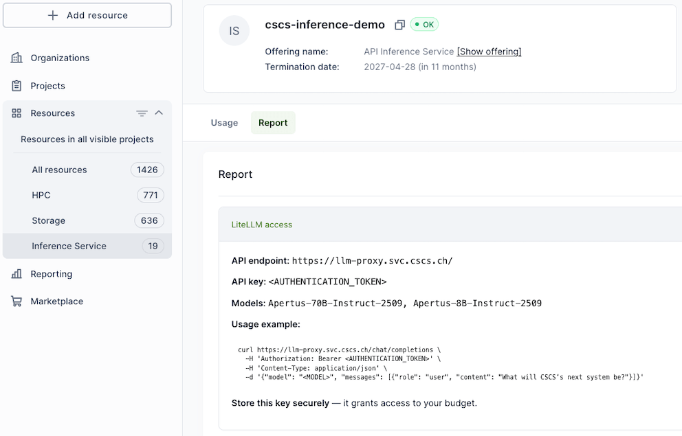

LLM Inference API Service¶
The LLM Inference API service is in early access
The service is under development, and is available by request to users who want to help CSCS build the service.
During the beta we want to understand the following:
- Single-site deployments vs. geo-redundant deployments for higher availability.
- Usage patterns (e.g. scale-to-zero on inactivity, vs. keep warm with a minimum replica count).
- Which models that should be offered, and under which conditions?
- The trade-off between existing capacity and future cost.
- What are the appropriate accounting metrics?
During the beta users should expect that:
- Capacity and availability is limited. Downtimes and slowdowns are to be expected.
- The models that are available can change over time.
- Access to the Beta is upon invitation, without any cost.
Please contact Pablo Fernandez at pablo.fernandez@cscs.ch if you are interested to participate in the Beta, describing your use case, relevant project or organizational context, and an estimate of your expected requirements including load, preferred models, and availability expectations.
The LLM Inference API service provides Internet-accessible OpenAI/Anthropic-compatible inference endpoints backed by selected open-weight LLM models such as Apertus and other vetted models. Users consume from a shared pool of models where requests are efficiently multiplexed across shared serving capacity, without needing to deploy, patch, scale, or operate the underlying serving stack.
Private model deployment is not supported. If you are interested to deploy a model that is not available in this service, we encourage using the sml tool developed by the Swiss AI community.
Usage of sensitive or personal data is not allowed. For privacy reasons, CSCS does not track user prompts or model responses. However, CSCS collects infrastructure metrics and telemetry, including prompt and response lengths, in order to monitor the service quality.
Service at a glance¶
- Managed endpoints
Standard API access over HTTPS using familiar client libraries and tooling.
- Curated models
Selected models are made available and updated centrally.
- No infrastructure management
Let CSCS manage GPUs, containers, autoscaling, and model servers.
- Sovereign and private
Your data is yours and is processed entirely within CSCS in Switzerland. Prompts and responses are not tracked.
Quick Start¶
Before using the API, obtain an authentication token by following the access guide. Include this token in every API request.
Query available models using the /models endpoint:
curl -X GET "https://llm-proxy.svc.cscs.ch/v1/models" \
-H "Authorization: Bearer <AUTHENTICATION_TOKEN>" \
-H "Content-Type: application/json"
To get a response using the Apertus 70B model do (piped into jq for pretty output):
$ curl -X POST "https://llm-proxy.svc.cscs.ch/chat/completions" \
-H "Authorization: Bearer <AUTHENTICATION_TOKEN>" \
-H "Content-Type: application/json" \
-d '{
"model": "Apertus-70B-Instruct-2509",
"messages": [
{"role": "user", "content": "Explain gradient descent in one paragraph."}
],
"temperature": 0.2
}' | jq
{
"id": "chatcmpl-f11032007bc340a88db62b46fac1224a",
"created": 1780997039,
"model": "Apertus-70B-Instruct-2509",
"object": "chat.completion",
"choices": [
{
"finish_reason": "stop",
"index": 0,
"message": {
"content": "Gradient descent is an optimization algorithm used in machine learning to minimize the cost function of a model. It works by iteratively adjusting the model's parameters in the direction of steepest descent of the cost fu
nction. This is done by calculating the gradient of the cost function with respect to each parameter, which gives the direction of the steepest increase. The algorithm then takes a step in the opposite direction of this gradient, effectively
moving downhill on the cost function landscape. The size of the step, or the learning rate, determines how quickly the algorithm converges to the minimum. The process is repeated until the algorithm converges to a minimum, which ideally cor
responds to the optimal set of parameters for the model. Gradient descent is a fundamental concept in deep learning and is used in various variants such as stochastic gradient descent, mini-batch gradient descent, and more.",
"role": "assistant",
"provider_specific_fields": {
"refusal": null
}
},
"provider_specific_fields": {
"token_ids": null,
"stop_reason": null
}
}
],
"usage": {
"completion_tokens": 169,
"prompt_tokens": 69,
"total_tokens": 238
}
}
Access¶
Request access¶
Early access to this service requires an invitation.
If you would like to participate, please contact Pablo Fernandez (pablo.fernandez@cscs.ch) describing your use case, relevant project or organizational context, and an estimate of your expected requirements including load, preferred models, and availability expectations.
Obtain your authentication token¶
Approved projects receive an authentication token, which can be retrieved and managed through the project management portal. The token can be accessed by selecting “Inference Service” under “Resources” on the left side bar menu on the portal, as demonstrated in the image below:

API¶
The service is accessed through the gateway base URL https://llm-proxy.svc.cscs.ch, and support standard endpoints, such as:
| Path | Purpose |
|---|---|
/v1/models |
Query available models |
/v1/chat/completions |
Chat completions |
/v1/embeddings |
Get a vector representation of a given input |
Todo
Describe API support. If we provide both OpenAI and Anthropic APIs, is it sufficient to provide links to external documentation for these APIs, with notes about any differences?
Guides¶
Setting up coding agents to use the inference service¶
Below are instructions for setting up Claude Code and OpenCode. For more details and for other agents, see their respective documentation pages.
Info
Both agent frameworks can be launched inside a loaded uenv or container, which will allow the agents to build and run your project.
Warning
The agents will have access to to your files and are able to submit jobs on behalf of you. This has to be handled very carefully; as a user you are responsible for the actions of the agents that you launch. Compute resources used by agent-launched Slurm jobs will be billed towards your project account.
Claude Code¶
Set the following environment variables before starting a claude session.
export ANTHROPIC_API_KEY=<AUTHENTICATION_TOKEN>
export ANTHROPIC_BASE_URL=https://llm-proxy.svc.cscs.ch/v1
export ANTHROPIC_MODEL=Apertus-70B-Instruct-2509
claude
OpenCode¶
Add a custom provider to your OpenCode config file (typically ~/.config/opencode/opencode.json).
{
"$schema": "https://opencode.ai/config.json",
"provider": {
"cscs": {
"npm": "@ai-sdk/openai-compatible",
"name": "CSCS Inference",
"options": {
"baseURL": "https://llm-proxy.svc.cscs.ch/v1"
},
"models": {
"Apertus-70B-Instruct-2509": {
"name": "Apertus 70B"
}
}
}
}
}
Start OpenCode and run the /connect command.
Select “CSCS Inference” to choose the newly added provider, and enter your API key when prompted.
Once connected, you can choose models configured in the config.
Info
OpenCode does not auto-discover available models. Models have to be explicitly configured in the config.
Reducing consumption¶
- Longer prompts increase cost and latency
- Future costs may differentiate across models with different computational load
Known issues and limitations¶
- Project key management is still evolving; currently one key is issued per project and rotation requires contacting the team.
- Detailed self-service telemetry is limited today.
- Documentation and model-specific configuration transparency are work in progress.
- Load balancing and other QoS need to be understood.
CSCS-internal inference service¶
For CSCS staff, an internal inference service is available on CSCS VPN through the https://ai-gateway.svc.cscs.ch URL. Usage is otherwise identical to the https://llm-proxy.svc.cscs.ch endpoint. For more information and keys, join the #cscs-inference-services Slack channel.